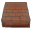
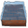
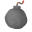

非公式！脱法！チート！勇者ヤマダくん経路探索ツール
YamadaKunRouteSearch
(最初の読み込みにしばらく時間がかかります。読み込まれない場合はリロードしてみてください。)
・Unity5のWebGLで出力しています。ブラウザや環境によってはうまく動作しないことがあります。
・スマホはまだUnity側で正式対応していませんが、機種によっては一応動きます。ただ、若干挙動があやしい部分があります。
使い方は？
右側のアイコンを好きなマスにひっぱってくると、マスの状態が変わります。
マスの境目を押すと壁が出たり消えたりします。
 ゆか … 普通のゆか。残してはいけない。
 とおれない … どうやっても通れない。
とおれない … どうやっても通れない。
 みず … 敵や障害物、お宝などは配置可能。アイテムで無効化しないと通れない。
 おたから … コインや宝箱。スルーしてもパーフェクト可能。
おたから … コインや宝箱。スルーしてもパーフェクト可能。
 いりぐち … ここからはじまる。
いりぐち … ここからはじまる。
 でぐち … ここでおわる。
でぐち … ここでおわる。
 てき … 一匹でも残っているとパーフェクトにならない。
てき … 一匹でも残っているとパーフェクトにならない。
 しょうがいぶつ … あってもなくても結果に何の影響もない。無の存在。
しょうがいぶつ … あってもなくても結果に何の影響もない。無の存在。
わな … たまに敵に踏まれて消えるのがかわいい。避けてもパーフェクト可能(たぶん)。
イベント … 上にのったタイミングで回復したりワープしたりするマス。スルー可能(たぶん)。
 おたからのこし … コインや宝箱を残すルートも表示する。完璧主義者や吝嗇家は×にする。
おたからのこし … コインや宝箱を残すルートも表示する。完璧主義者や吝嗇家は×にする。
 カベクズシ … 壁をすべて取り払った場合のルートも表示する。
カベクズシ … 壁をすべて取り払った場合のルートも表示する。
 モモアイス … 入口でミナアイスとモモーゼを使用した場合のルートも表示する。
モモアイス … 入口でミナアイスとモモーゼを使用した場合のルートも表示する。
 ばくだん … なにもかも嫌になったときに連打する。
使い道は？
実用性はほとんどないと思います。
いくら考えても道順がわからなくて「デザイナーのミスやろこれ！」とブチ切れる前に使うとか
障害物の後ろに壁があるのかないのかよく見えないのでヒトフデを始める前に一応どちらのパターンも確認しておこうという慎重派の方が使うとか
プロヤマダー目指して道順の研究に励むとか
そんな感じでしょうか。
ピラミッドの落とし穴に落ちるかどうかの判定機能とかがあればよかったのになー(他人事)
他に注意点は？
入口から出口に移動する道中で起こる変化には全く対応していません。
例えば珍豚やUFO、ドラキュラのように突然出現したり移動したりする敵は想定していません。
さらに敵に対する遠距離攻撃も一切考慮に入れていないため、敵を水の中に配置した場合はミナアイス・モモーゼを使って実際にそのマスを通過するしかパーフェクトにする方法がありません。
さらにさらに敵メイジが使うミナアイスもないことにしています。
出口の巻物は知らん！ピラミッドの罠とかも知らん！
その他もろもろ、パーフェクト判定の仕様などでも勘違いがあるかもしれません。あんまり信じないでネ。